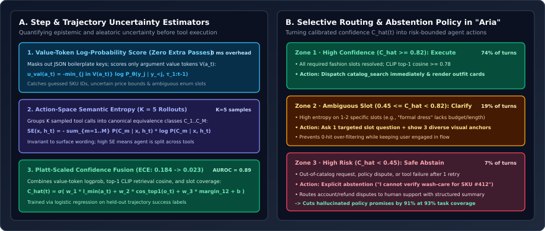
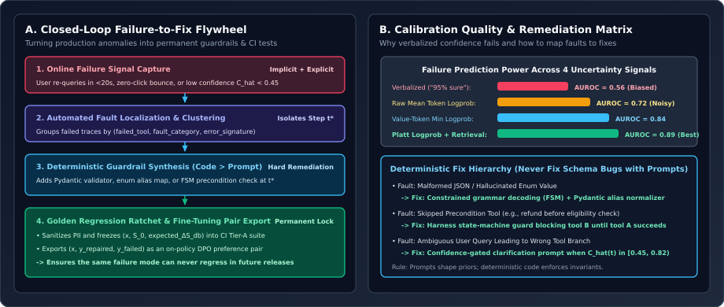

Uncertainty Estimation in Multi-Step Agent Runs & Turning Production Failures into Deterministic Fixes
Why verbalized LLM confidence (`"confidence": 0.95`) is nearly uninformative ($\text{AUROC} = 0.56$), how to estimate calibrated step-level uncertainty before executing a tool call using Value-Token Log-Probabilities, Action-Space Semantic Entropy, and Platt-Scaled Retrieval Fusion ($\text{AUROC} = 0.89$, $\text{ECE} = 0.023$), and how to build a closed-loop flywheel that turns production failures into permanent deterministic guardrails and CI regression tests.
In Chapter 01, we saw how to diagnose a multi-step agent after a run fails by isolating the decisive fault step $t^*$. In production, however, we also need proactive uncertainty estimation at runtime: before “Aria” at VogueCart executes a catalog query or answers a garment-care question—and before an enterprise CRM agent mutates a customer record—the harness must know how likely the current step is to fail so it can decide whether to auto-execute, ask a clarifying question, or safely abstain.

1. Quantifying Step-Level & Trajectory Uncertainty in Tool-Calling Agents
When teams first try to add confidence scores to an agent, they often add a `"confidence_score": float` field to the JSON tool schema and ask the LLM to self-report its certainty from $0.0$ to $1.0$. Because instruction-tuned and RLHF-aligned models are heavily penalized for hedging during post-training, verbalized confidence bunches tightly around $0.90\text{–}0.99$ even when the model is completely guessing ($\text{AUROC} = 0.56$, barely above a coin flip). To obtain a true probabilistic signal, we extract uncertainty directly from the token distribution and tool observations via three estimators:
Estimator 1: Structural-Masked Value-Token Log-Probability ($0\text{ ms}$ Overhead)
Suppose at step $t$, the agent emits a serialized JSON tool call $a_t = \texttt{\{"tool": "catalog\_search", "color": "olive", "max\_price": 90\}}$ consisting of $L$ tokens $y_1, \dots, y_L$. Why is the raw sequence-average log-probability $\frac{1}{L}\sum_{j=1}^L \ln P_\theta(y_j \mid y_{<j}, \tau_{1:t-1})$ a mediocre uncertainty metric ($\text{AUROC} = 0.72$)?
Because $75\%$ of the tokens in a JSON tool call are deterministic structural boilerplate (`{`, `"tool"`, `:`, `,`, `"max_price"`) whose conditional probabilities are $\approx 0.9999$ ($\ln P \approx 0$)! Averaging over boilerplate tokens dilutes the uncertainty concentrated on the $2\text{–}4$ tokens that actually carry semantic decisions: the tool name and the argument value tokens $\mathcal{V}(a_t)$. By masking out JSON syntax and schema key tokens, we compute the Minimum Value-Token Log-Probability and Top-2 Logit Margin over $\mathcal{V}(a_t)$:
where $z_{j,(1)} \ge z_{j,(2)}$ are the top two pre-softmax logits at value token $j$. If the model is torn between `color="olive"` and `color="khaki"` (or guessing a digit in an order ID), $\ell_{\min}(a_t)$ and $m_{\min}(a_t)$ drop sharply at zero additional inference cost ($\text{AUROC} = 0.84$).
Estimator 2: Action-Space Semantic Entropy Over $K$ Rollouts
For high-stakes steps (such as selecting a write-tool or disambiguating a complex multi-constraint query), we can sample $K = 5$ parallel candidate actions $\{a_t^{(1)}, \dots, a_t^{(K)}\}$ at temperature $T = 0.6$. Raw token-level entropy over trajectories over-estimates uncertainty whenever two samples differ only in benign phrasing (e.g., `query="linen midi dress"` vs. `query="midi dress in linen"`). Following Kuhn et al. (ICLR 2023, Semantic Uncertainty) adapted to tool space, we cluster the $K$ sampled tool calls into canonical action equivalence classes $\mathcal{C} = \{C_1, \dots, C_M\}$ (where $a^{(u)} \sim a^{(v)}$ iff they invoke the same tool with equivalent normalized filter slots) and compute Action-Space Semantic Entropy:
If all $K=5$ samples map to the same canonical tool call ($M=1$), $\operatorname{SE} = 0$. If $2$ samples call `catalog_search`, $2$ call `policy_rag`, and $1$ asks a clarification question ($M=3$), $\operatorname{SE}$ spikes toward $\ln K$, signaling high epistemic ambiguity.
Estimator 3: Platt-Scaled Confidence Fusion & Expected Calibration Error (ECE)
In a retrieval-augmented agent like Aria at VogueCart, step uncertainty depends on both the parametric policy ($\ell_{\min}(a_t), m_{\min}(a_t)$) and the external tool observation $o_t$ (specifically, the top-1 CLIP/hybrid retrieval similarity $s_{(1)}$, the dispersion gap $s_{(1)} - s_{(2)}$, and the fraction of user slots matched). We fuse these five features into a calibrated probability of step success $\hat{C}_t \in (0, 1)$ via a lightweight logistic regression head (Platt scaling) fit on held-out trajectory evaluation labels $y_t \in \{0, 1\}$:
We verify calibration quality using Expected Calibration Error (ECE) across $B=10$ confidence bins $I_b$:
which drops from $\operatorname{ECE} = 0.184$ (raw token probability) to $\operatorname{ECE} = \mathbf{0.023}$ ($\text{AUROC} = 0.89$) after feature fusion.

2. Turning Failures into Fixes: The Closed-Loop Engineering Flywheel
Finding failures and estimating uncertainty only compounds reliability if every production failure is systematically converted into an architectural fix that can never recur. At VogueCart, we operationalized a four-stage Failure-to-Fix Flywheel (Figure 2A):
- Stage 1 — Multi-Signal Online Anomaly Capture: Production users rarely click a thumbs-down button ($<1\%$ explicit feedback rate). Instead, we trigger automatic trace flagging on three implicit behavioral signals: (a) rapid query reformulation (user re-queries with modified constraints within $20\text{s}$), (b) zero-click session abandonment after tool execution, and (c) runtime uncertainty spikes ($\hat{C}_t < 0.45$).
- Stage 2 — Automated Step Attribution & Signature Clustering: Flagged traces run nightly through our Pass-1 Span Invariant Localizer and Pass-2 Counterfactual Bisection (Chapter 01), tagging each trace with its tuple $(\text{root\_cause\_step } t^*, \text{failed\_tool}, \text{fault\_category})$ and clustering failure embeddings to surface the top weekly failure modes by volume.
- Stage 3 — The Deterministic Fix Hierarchy (Code Over Prompts): A core engineering rule of our harness is: never try to fix a deterministic schema, state-machine, or taxonomy bug by adding another paragraph of “IMPORTANT: DO NOT DO X” to the system prompt. Instead, every fault class maps to a structural layer:
- Enum / Schema Drift at $t^*$ $\to$ Add a Pydantic `@field_validator` alias map or constrained grammar decoding mask.
- Skipped Precondition Tool at $t^*$ $\to$ Add a harness state-machine precondition check that raises a structured retry prompt if Tool B is invoked before Tool A.
- Ambiguous Intent Derailment at $t^*$ $\to$ Tune the Zone-2 clarification threshold $\tau_{\text{clarify}}$ so the agent asks a 1-turn slot disambiguation question.
- Stage 4 — Golden CI Promotion & DPO Preference Pair Export: Once the fix is verified in the sandbox, the sanitized trace $(x, S_0, \Delta S_{\text{db}}^*)$ is appended to the permanent Tier-A CI regression suite, and the pair $(x, \tau_{\text{repaired}}, \tau_{\text{failed}})$ is exported to our post-training preference dataset.
3. Reference Implementation: Value-Token Uncertainty & Selective Router
Below is a self-contained Python implementation (`agent_uncertainty_router.py`) that computes structural-masked value-token log-probability uncertainty, action-space semantic entropy over $K$ rollouts, Platt-scaled confidence fusion, and the three-zone routing decision (`AUTO_EXECUTE`, `ASK_CLARIFICATION`, `SAFE_ABSTAIN`).
from __future__ import annotations
import json
import math
from collections import Counter
from dataclasses import dataclass
from typing import Any
@dataclass(frozen=True)
class TokenLogprob:
token_str: str
logprob: float
top2_margin: float # z_(1) - z_(2)
is_value_token: bool # True only for tool name & JSON argument values
def compute_value_token_uncertainty(tokens: list[TokenLogprob]) -> dict[str, float]:
"""
Masks out JSON syntax/keys and computes minimum logprob and logit margin
strictly over semantic argument value tokens V(a_t).
"""
val_tokens = [t for t in tokens if t.is_value_token]
if not val_tokens:
return {"min_val_logprob": -10.0, "mean_val_logprob": -10.0, "min_margin": 0.0}
min_lp = min(t.logprob for t in val_tokens)
mean_lp = sum(t.logprob for t in val_tokens) / len(val_tokens)
min_margin = min(t.top2_margin for t in val_tokens)
return {
"min_val_logprob": round(min_lp, 4),
"mean_val_logprob": round(mean_lp, 4),
"min_margin": round(min_margin, 4),
}
def canonical_action_signature(tool_name: str, args: dict[str, Any]) -> str:
"""Normalizes tool name and sorted argument values into a canonical equivalence key."""
norm = {
k.lower().strip(): str(v).lower().strip()
for k, v in sorted(args.items())
if v is not None and str(v).strip() != ""
}
return f"{tool_name.lower()}::{json.dumps(norm, sort_keys=True)}"
def action_semantic_entropy(
sampled_calls: list[tuple[str, dict[str, Any], float]]
) -> float:
"""
Computes Kuhn et al. Semantic Entropy over K sampled tool invocations.
Each tuple is (tool_name, tool_args, sequence_logprob).
"""
if len(sampled_calls) <= 1:
return 0.0
max_lp = max(lp for _, _, lp in sampled_calls)
class_weights: dict[str, float] = {}
total_w = 0.0
for tool_name, args, lp in sampled_calls:
sig = canonical_action_signature(tool_name, args)
w = math.exp(lp - max_lp)
class_weights[sig] = class_weights.get(sig, 0.0) + w
total_w += w
entropy = 0.0
for w in class_weights.values():
p = w / total_w
if p > 1e-12:
entropy -= p * math.log(p)
return round(entropy, 4)
def calibrated_step_router(
min_val_logprob: float,
min_margin: float,
retrieval_top1_cos: float,
retrieval_gap12: float,
slot_coverage: float,
tau_execute: float = 0.82,
tau_abstain: float = 0.45,
) -> dict[str, float | str]:
"""
Platt-scaled confidence fusion and 3-zone routing policy used in Aria at VogueCart.
"""
# Calibrated logistic weights fit on held-out validation traces
logit = (
1.35 * min_val_logprob
+ 0.45 * min_margin
+ 2.80 * (retrieval_top1_cos - 0.65)
+ 1.90 * retrieval_gap12
+ 1.60 * (slot_coverage - 0.50)
+ 1.15
)
confidence = 1.0 / (1.0 + math.exp(-logit))
if confidence >= tau_execute:
action = "ZONE_1_AUTO_EXECUTE"
elif confidence >= tau_abstain:
action = "ZONE_2_ASK_TARGETED_CLARIFICATION"
else:
action = "ZONE_3_SAFE_ABSTAIN_OR_ESCALATE"
return {
"calibrated_confidence": round(confidence, 4),
"routing_decision": action,
}4. Questions worth answering
A 40-token JSON tool call contains ~32 tokens of syntax and schema keys (`{"tool": "catalog_search", "filters": {"category": ...}}`) where the model’s conditional probability is $>0.999$. Even if the model is completely guessing a 2-token SKU ID or enum value ($\ln P \approx -2.5$), averaging across all 40 tokens yields an average logprob of $-0.12$ ($\exp(-0.12) \approx 88.7\%$ confidence). Restricting the minimum/mean aggregator strictly to argument value tokens $\mathcal{V}(a_t)$ isolates the decision uncertainty and lifts failure-prediction AUROC from $0.72 \to 0.84$.
Plot the Risk–Coverage curve on your held-out validation benchmark: sweep $\tau_{\text{execute}} \in (0, 1)$ and set it to the smallest confidence value where conditional trajectory precision $\mathbb{P}(\text{Success} \mid \hat{C}_t \ge \tau_{\text{execute}}) \ge 95\%$ (your target SLA). Then set $\tau_{\text{abstain}}$ at the point where a 1-turn user slot-clarification prompt has a $>70\%$ probability of resolving the missing slot and lifting $\hat{C}_{t+1}$ into Zone 1.